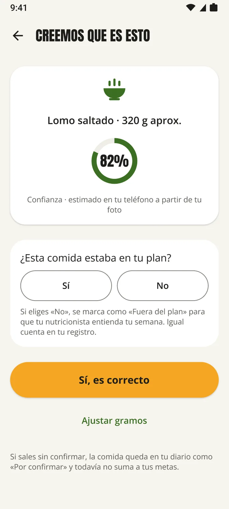
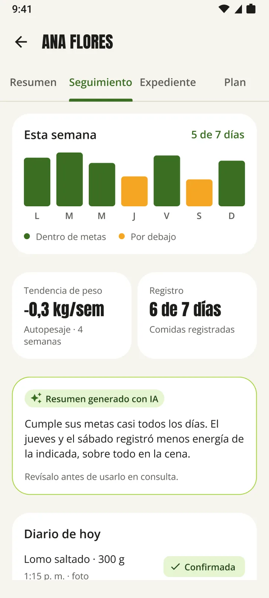
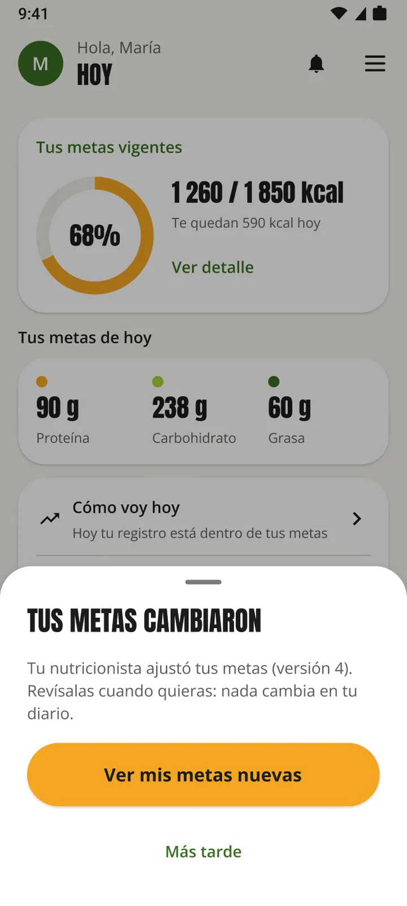
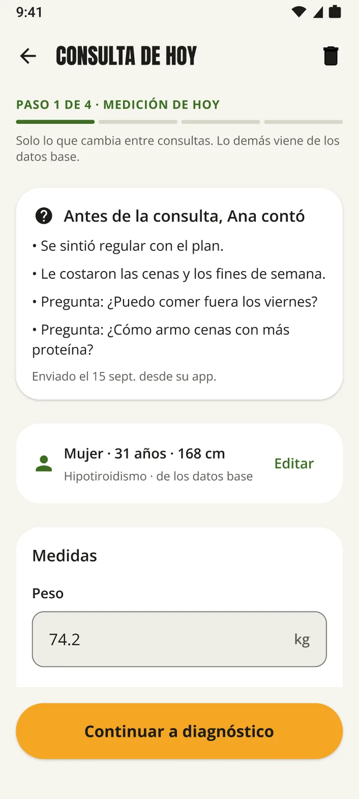
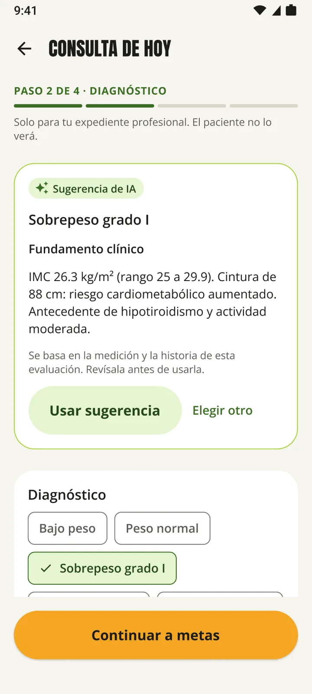
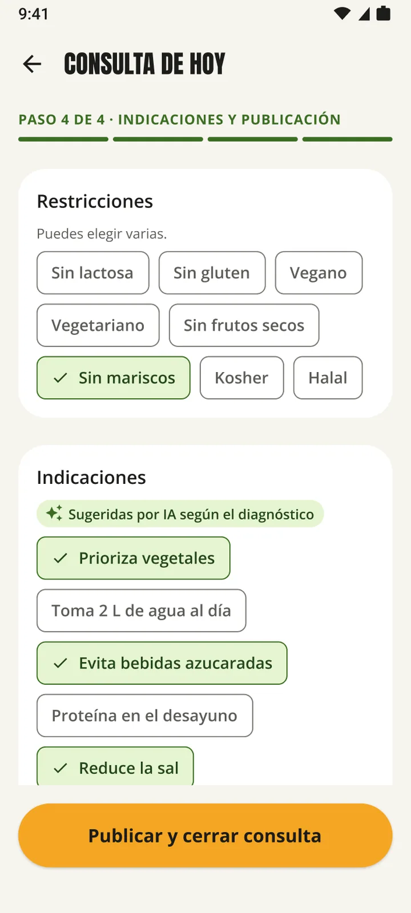
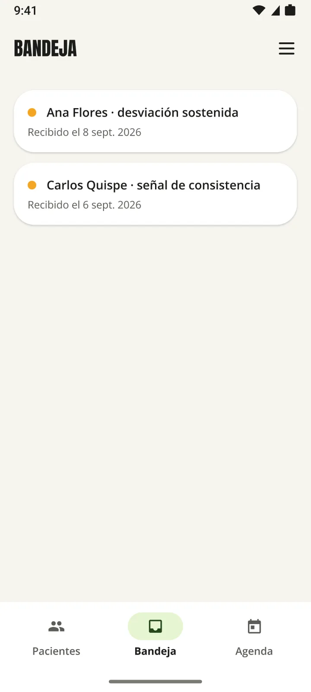
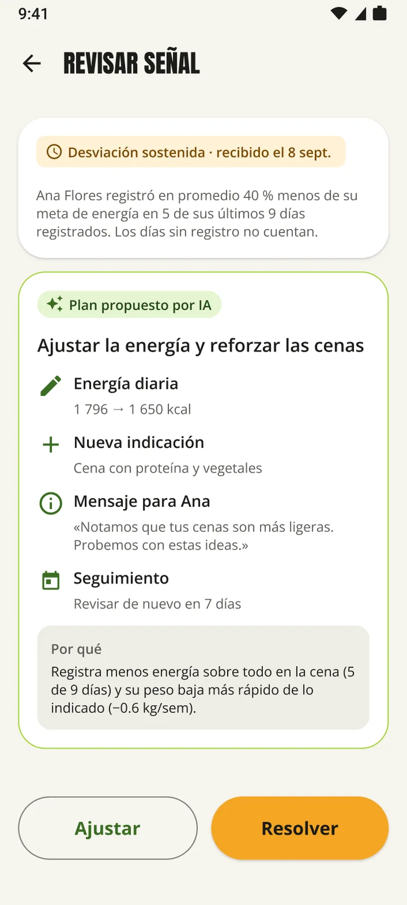

Una app para los dos lados de la consulta
El paciente registra su comida con una foto. Su nutricionista lo ve en el seguimiento, ajusta el plan y lo publica. Los dos trabajan sobre la misma versión.



Lo que antes le contaban de memoria, ahora está en la ficha.
Ejemplo de la pestaña Seguimiento con Ana Flores, paciente de prueba.
6 de 7
días con registro
Comidas por foto o a mano, con su hora.
5 de 7
días dentro de metas
Jueves y sábado por debajo de la energía indicada.
−0,3 kg
por semana
Tendencia de cuatro semanas con autopesaje.
La consulta, paso a paso
La app le guía en el orden de una consulta real. Puede salir y retomar donde quedó.
-
Medición de hoy
Solo lo que cambió desde la última cita.

-
Diagnóstico con IA
Sugerido con su fundamento. Usted lo confirma o elige otro.

-
Metas calculadas
Mifflin-St Jeor, déficit y proteína por kg editables.
-
Indicaciones y publicación
Publique el plan. Su paciente recibe la versión nueva.

Entre citas, solo le escribe cuando hace falta
Una desviación sostenida o un registro inconsistente llega a su Bandeja. La IA propone un ajuste y usted elige qué hacer. Ninguna señal cambia un plan por sí sola.
Plan propuesto por IA para Ana Flores
Energía diaria: 1 796 → 1 650 kcal
Nueva indicación: cena con proteína y vegetales


Todo lo que usa en su práctica
Mis pacientes
Los pacientes que piden acción aparecen primero.
Invitación por QR
Se genera en la misma consulta.
Seguimiento en solo lectura
Ve el diario; nunca puede escribir en él.
Plan versionado
Cada publicación queda guardada como versión.
Agenda
Agende la próxima cita desde la ficha.
Derivaciones y alta clínica
Registre derivaciones y cierre el tratamiento.
Catálogo de alimentos locales
Agregue lo que falte para registros más precisos.
Datos base una sola vez
En cada cita solo mide lo que cambió.
Lo que verá su paciente
Registra con una foto, marca si la comida estaba en su plan y ve su peso como tendencia. Los días bajo la meta no se marcan en rojo.
¿Su paciente ya tiene la invitación? Que descargue la app, cree su cuenta como paciente y escanee el código.
Prueba social
La misma consulta, vista desde los dos lados
Nutricionista
«Llego a la consulta de control sabiendo cómo le fue a mi paciente cada día. Ya no dependo de lo que recuerde.»
Paciente
«Tomo una foto y listo. Ver mi peso como tendencia me quitó la presión de la balanza.»
Con criterio clínico a la vista
- Fórmula y parámetros visibles en cada meta
- Diagnóstico sugerido siempre con su fundamento
- El paciente puede retirar su consentimiento
- Funciones con IA desactivables por el paciente
Cree su cuenta e invite a su primer paciente hoy.
Descargar para AndroidPara Android 7.0 o superior
- Descargue Healthify en su teléfono Android
- Cree su cuenta y elija «Nutricionista»
- En consulta, genere el código QR de su paciente